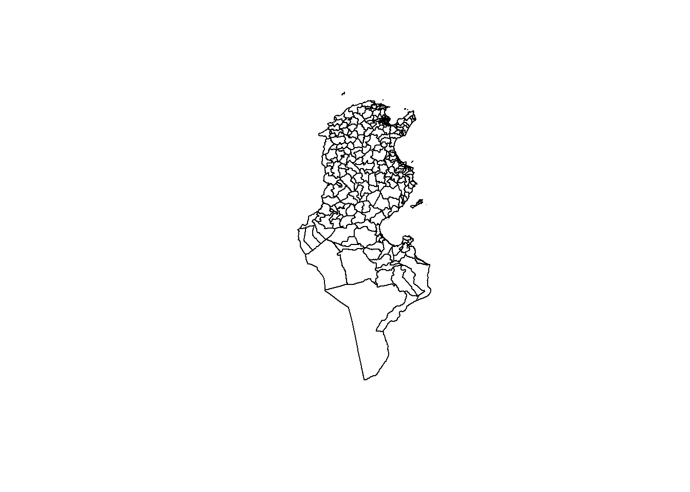
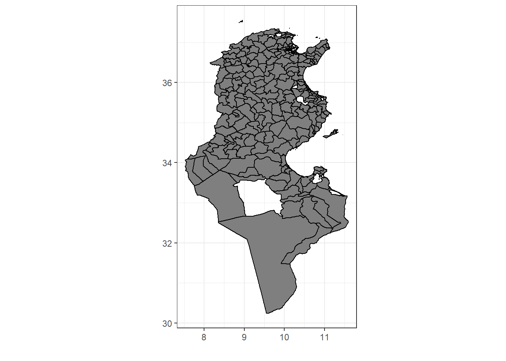

library(maptools)
library(sp)
library(shapefiles)
library(raster)
library(readxl)
library(readr)
library(scales)
library(ggplot2)
library(rgdal)
library(rgeos)On commence par faire le plot de la carte de la Tunisie en utilisant le package raster
m_deleg<- getData(name="GADM", country="TUN", level=2)
plot(m_deleg)
Et puis on importe notre jeu de donnees ainsi que la base qui contient le code de chaque delegation de la Tunisie. Notre jeu de donnees concerne les logements distant plus de 2 Km depuis le plus proche centre sportif. On fait apres une jointure de ces bases afin d’avoir pour chaque delegation la valeur de la variable d’interet et son code.
code=read.csv("delegationTotclean1.csv")
base <- read_excel("base.xlsx")
base=base[-1,]
base=base[,-1]
i=match(base[,1] ,code$deg)
base$hasc=code$HASC_2a[i]Le jeu de donnees devient alors :
head(base)## # A tibble: 6 x 3
## Région Valeur hasc
## <chr> <dbl> <fct>
## 1 Hammamet 21694 <NA>
## 2 Raoued 19947 <NA>
## 3 Zarzis 18608 <NA>
## 4 Bouhajla 14418 <NA>
## 5 Sfax Sud 14359 <NA>
## 6 Regueb 14177 <NA>Et on finit par appliquer les donnees sur la carte initialement preparee.
tn_deleg_fr <- fortify(m_deleg,region = "HASC_2")
j=match(tn_deleg_fr$id,base$hasc)
tn_deleg_fr$Valeur=base$Valeur[j]
p2<-ggplot(tn_deleg_fr, aes(x=long, y=lat, group=group))+geom_polygon(aes(fill=Valeur),color = "black")+labs(x="",y="")+ theme_bw()+coord_fixed()+scale_fill_gradientn(colours=c("blue","white","red"),values=rescale(c(-100,0,100)))
p2<-p2+ theme(legend.position="right")
p2+labs(fill = "Nombre des logements")